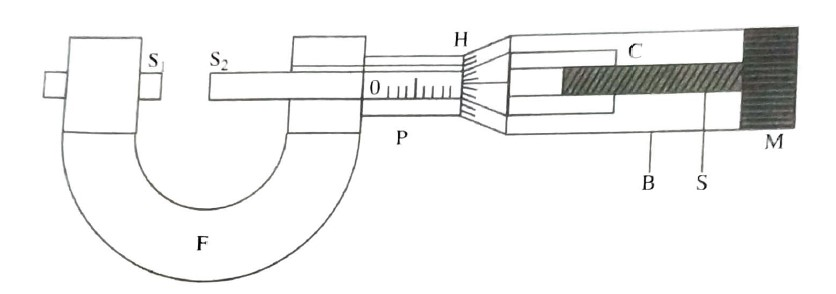

To measure the thickness of the given plate.
Screw guage, and glass plate.
A Screw guage consists of a U-shaped metallic frame 'F' a shown in figure. To one end of this frame, a flat shaft S1 (stud) is fixed. On the opposite end of F, a hollow, long cylinder 'C' is fixed.The hollow cylinder has fine threads cut inside it and it serves as the nut. On the outer surface of this hollow cylinder, a line, parallel to its axis, called index line is drawn and is divided into equal divisions.This serves as the pitch scale(p), a screw with a flat tip S2 having threads exactly identical to the threads cut inside the cylinder, moves through the cylinder 'C'. To the other end of the screw, a milled head 'M' is connected. To this milled head, one end of the barrel 'B' is connected. This barrel 'B' forms a jacket to the first hollow cylinder 'C'. The other end of the barrel in tapered and has 100 or 50 eual divisions on it. This is called the head scale.
LEAST COUNT(L.C)=\(\frac{pitch\, of \, the\, screw}{No.\, of\, Divisions\, on\, Head\, scale}\)
The screw guage works on screw principle. The distance moved by the screw in the nut for one complete rotation is a constant and is called pitch of screw. When the head of the screw is divided into say, 100 equal division, then the distance moved by the screw for even \(\frac{1}{100}\)th of a complete rotation also can be accurately measured. Eventually this is the least count of the instrument.
Least Count=\(\frac{pitch\, of \, the\, screw}{No.\, of\, Divisions\, on\, Head\, scale}\)
To find the thickness of a thin glass plate and the diameter of a thin wire or a small sphere using a screwguage guage we must first determine its least count. The head is rotated through a certain number of complete rotations. The distance moved by the screw is measured from the displacement of head scale edge on the pitch scale. then
pitch of the screw=\(\frac{Distance\, moved}{No.\, of\, rotations}\)
and Least Count=\(\frac{pitch\, of \, the\, screw}{No.\, of\, Divisions\, on\, Head\, scale}\)
There are two types of zero errors depending on whether the zeroth division of the head scale is below or above the index line. Figure (a) shows no zero error situation.
If the zeroth division of the head scale is above the index line,the error is said to be negative and the correction has to be positive.
If the zero'th division of the head scale is below the index line of the pitch scale, the error is said to be positive and the correction is negative
The given glass plate is held between the screw tip and fixed stud. The value of the highest division on the pitch scale is taken as pitch scale reading(P.S.R). The number of head scale division coinciding with the index line is taken as observed head scale reading,correction is added to this to correct head scale eading(n). It is multiplied by the least count to get the fraction of a pitch scale reading. This fraction is added to the pitch scale reading to get the total reading or correct thickness of the glass plate.
Then,Total reading=P.S.R +(n*L.C)
Changing the position of the glass plate between the stud and screw tip, 4 or 5 reading are taken to get the average thickness of the glass plate.